นอกจากการประมวลผลข้อมูลที่กระทำในระดับ Word แล้ว ในหลายกรณี มีความจำเป็นต้องทำการประมวลผลในระดับส่วนของ Word หรือ ในระดับบิท เช่นการเรียกดูอักษรหนึ่งตัวขนาด 8 บิท ใน Word ในคอมพิวเตอร์ MIPS จึงมีชุดคำสั่งสำหรับประมวลผลตรรกะ เพื่อลดขั้นตอนต่างๆ เช่น การนำบิทเข้า หรือ ออก จาก Word รูป 2.4 แสดงตัวประมวลผลตรรกะระหว่างภาษา C และJAVA กับชุดคำสั่งของ MIPS
ชุดของคำสั่งแรกเป็นชุดคำสั่งการเลื่อนบิต หรือ การ Shift ซึ่งคำสั่งการเลื่อนบิต มีชุดคำสั่งเพื่อเลื่อนคำสั่งไปทางด้าน ซ้าย และ ทาง ขวา จากคำสั่ง sll และ srl ตามลำดับ เมื่อทำการเลื่อนบิตแล้ว จะทำการใส่ค่า ศูนย์ ในบิตที่ถูกเลื่อนไป ตัวอย่างเช่น กรณีที่ $s0 มีค่า
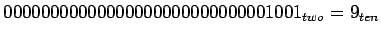
เมื่อใช้คำสั่ง sll โดยเลื่อนไป 4 บิต จะได้ค่าใหม่ดังต่อไปนี้
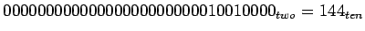
สามารถแสดงค่าคำสั่งเอสแซมบลีได้ดังต่อไปนี้
sll $t2, $s0, 4 # reg $t2 = reg $s0 << 4 bits
ค่า 4 ในการเลื่อนบิตนั้น ในคำสั่ง MIPS จะใช้ฟิลด์ shamt ในการแสดงค่า ซึ่งสามารถแสดงดังต่อไปนี้
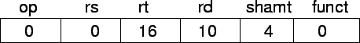
การเลื่อนบิตไปทางซ้ายมีผลข้างเคียงที่สามารถใช้งานได้คือ การเลื่อนบิตไปทางซ้าย  บิต มีค่าเท่ากับการคูณตัวเลขเดิมด้วยค่า 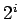
บิต มีค่าเท่ากับการคูณตัวเลขเดิมด้วยค่า 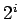
คำสั่งที่สำคัญต่อมาได้แก่คำสั่ง คำสั่ง AND เป็นประโยชน์อย่างมากในการแยกฟิลด์ออกจากกัน เนื่องจากการทำ AND นั้น ทั้งสองตัวกระทำจะต้องมีค่าเป็นหนึ่ง จึงจะได้ผลลัพธ์เป็น หนึ่ง ตัวอย่าง ให้รีจีสเตอร์ $t2 เก็บค่า
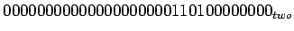
และ รีจีสเตอร์ $t1 เก็บค่า
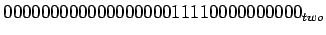
หลังจากเมื่อเรียกคำสั่ง
and $t0, $t1, $t2 # reg $t0 = reg $y1 & reg $t2
ค่าในรีจีสเตอร์ $t0 จะได้เท่ากับ
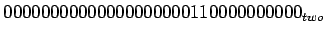
จากตัวอย่างขั้นต้น ถ้าจะใช้คำสั่ง
or $t0, $t1, $t2 # reg $t0 = reg $y1 | reg $t2
ผลลัพธ์ในค่าในรีจีสเตอร์ $t0 จะได้เท่ากับ
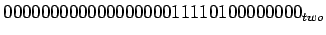
คำสั่งสุดท้ายได้แก่คำสั่ง 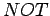 และ 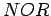
ถ้าใช้คำสั่ง nor
nor $t0, $t1, $t2 # reg $t0 = ~(reg $y1 | reg $t2)
ผลลัพธ์ในค่าในรีจีสเตอร์ $t0 จะได้เท่ากับ
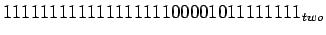